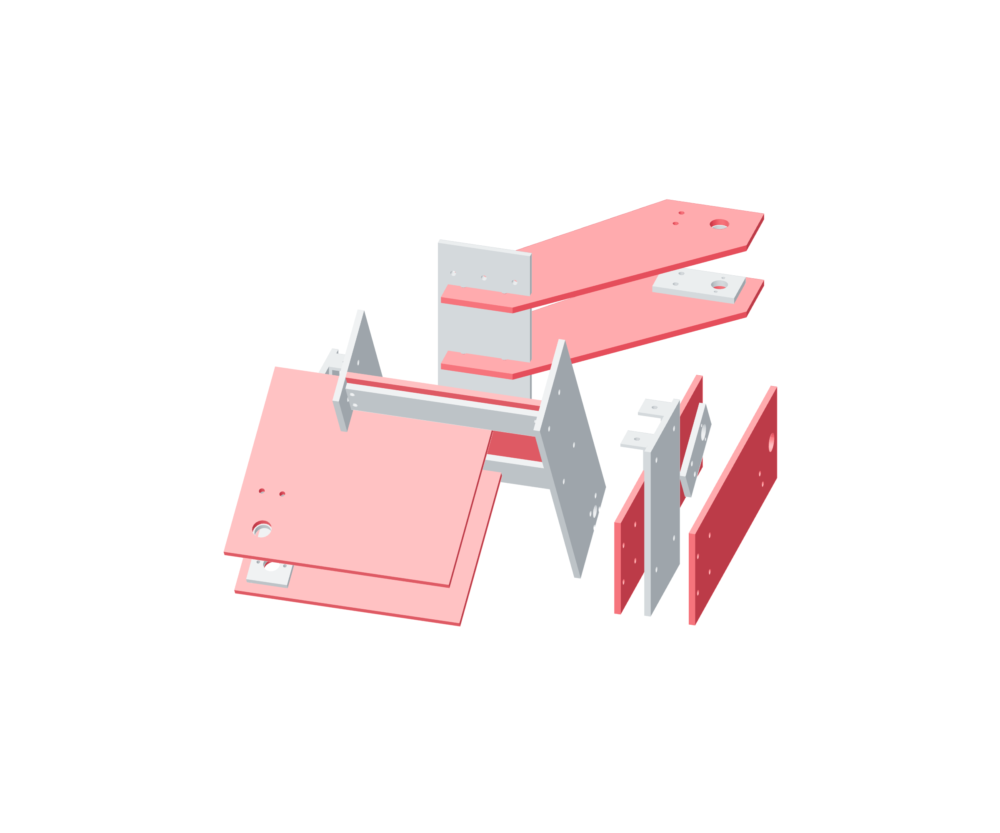

Gimbal / actuator anchors83 / 179
Tie each base clevis to its parent frame
Paired flat metal webs connect the fixed end of each actuator to the frame that carries that axis. The roll actuator uses its shared metal anchor plate.
Add6 base webs · roll anchor · 12 M5 × 25 cheek bolts · 4 M5 × 90 pitch ties · 4 M5 × 35 roll joints
Tools / setupSquare · hex keys / wrenches · independent frame support

- Identify the parent frames: fixed yaw support, yaw frame for pitch and pitch frame for roll.
- Start each pair of metal webs at its parent-frame mounting stations and fixed clevis cheeks.
- Install the shared roll anchor plate with both roll webs; keep all reaction joints metal-backed.
- Seat opposite web joints progressively, then push each unloaded fixed clevis by hand to check its complete metal reaction path.
Ready when
No fixed actuator end floats or shifts; each base clevis has two retained metal webs connected to its own parent frame. A moving or unsupported base cannot carry actuator force. Correct the web/anchor joints before installing its screw or removing frame support.